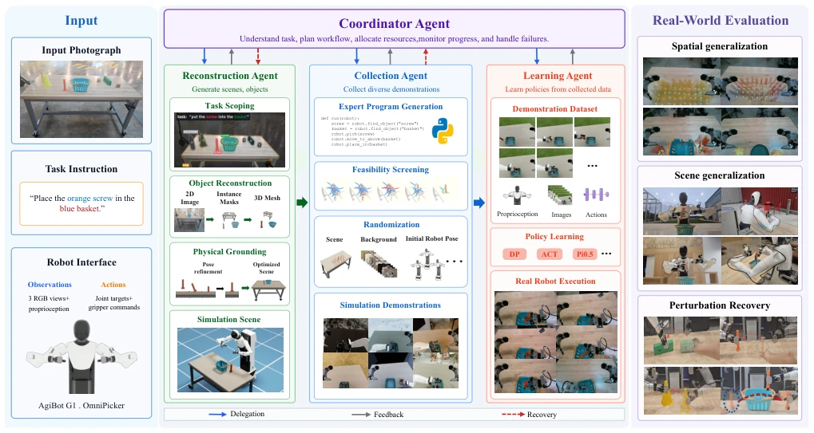
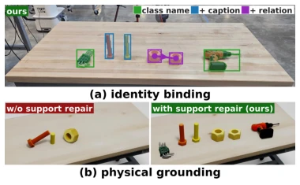
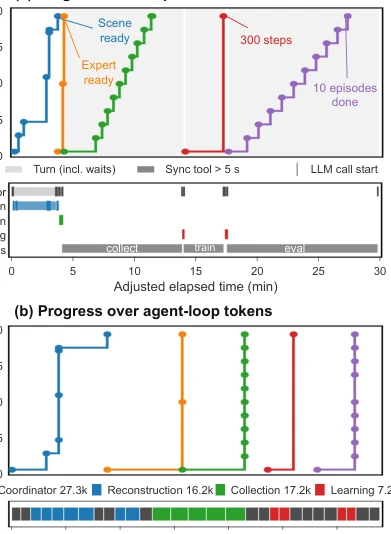
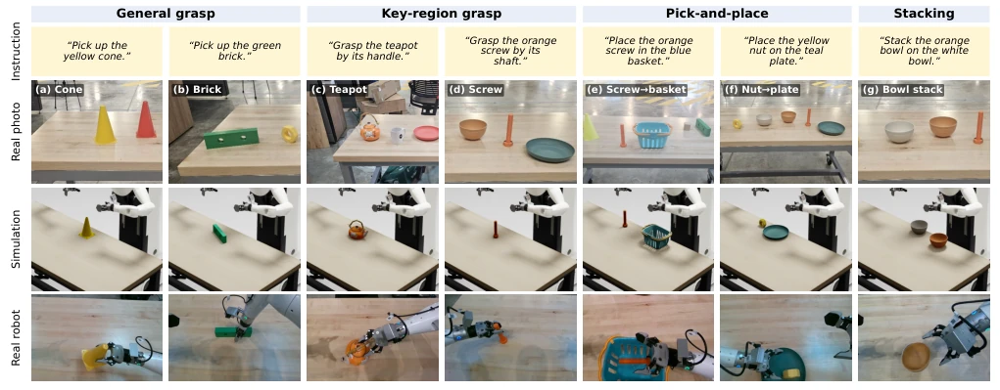

This paper pushes "automation" to the extreme, using Agents to transform single images into simulation data, which sounds very attractive. ARSTAG indeed saves the trouble of manual teleoperation, and π0.5 achieved an average success rate of 74.6% on real robots, which counts as a decent baseline for general pick-and-place tasks. But do not celebrate too early; this system relies too heavily on LLMs and toolchains. Once SAM3 or GraspGenX malfunctions, the entire process collapses. Moreover, experiments focus on desktop operations, where complex stacking and fine assembly remain significant limitations. Although the sim-to-real gap has been partially filled by randomization, it is not completely bridged. It counts as adding a brick to "few-shot" learning, but is far from "zero-shot" deployment, and the dependency on a single RGB image limits the depth of scene understanding.
Existing methods either rely on large amounts of manual teleoperation data [11], or simulation scene construction is time-consuming and labor-intensive [3][4]. Although Real-to-Sim technology has made progress [15][16], automated reconstruction and expert behavior generation for task-specific tasks still require substantial engineering adjustments. Especially when policies need to generalize to new configurations, manual reset and scene configuration costs are extremely high. ARSTAG aims to solve the problem of directly generating deployable policy data from a single RGB image and instruction, reducing manual intervention. Although existing Sim-to-Real methods can improve generalization [1][2], they lack an end-to-end task-oriented data generation pipeline, leading to long adaptation cycles for new tasks. Furthermore, existing Agent systems are mostly used for execution rather than data generation [6][7], and this work fills this gap.
The system consists of a Coordinator and three sub-Agents. First is task-oriented Real-to-Sim reconstruction (Reconstruction Agent), utilizing Scene Graph and SAM3 for visual and physical grounding, and ensuring reasonable object support relationships through geometric pose repair (Support Repair), solving the support suspension problem in reconstruction. Second is task-consistent data generation (Collection Agent), generating demonstrations based on Expert Programs, combining Feasibility Screening and Task-consistent Randomization, including execution perturbations (trajectory/target), geometric changes (table/body), and background changes, and generating Recovery data to enhance robustness. Finally is policy learning (Learning Agent), supporting architectures such as ACT, DP, π0.5. The Coordinator is responsible for cross-stage feedback and error recovery; when a sub-Agent reports failure, it can trigger reconstruction correction or retry, ensuring a closed-loop process.

Fig. 1. ARSTAG overview. Given a single RGB image and a task instruction, a coordinator guides three specialized agents through task-scoped reconstruction, demonstration generation, and policy learning for real-robot deployment, using tool feedback to coordinate revisions across stages.

Fig. 4. Identity binding and support repair. (a) Class names distinguish the hex keys and drill (green), captions distinguish the screws by color (blue), and relative size together with the “left of” relation distinguishes the two nuts (purple). (b) The same reconstructed scene under gravity without (left) and with (right) support repair. Without repair, three of the six objects lie below the table surface and are not visible. one randomization family: execution (control delay and tra- jectory/target perturbations), geometry (table size/offset and torso height), or background (HDRI). Evaluation varies the removed family while keeping the others enabled, with 40 held-out layouts per cell (Table II). Execution and geometry are tested without perturbation, within the collection range (ID), an

Fig. 5. Agent execution profile for screw grasping. (a) Pipeline progress and agent activity over elapsed time; gray regions denote asynchronous jobs. (b) Progress versus cumulative agent-loop tokens. Colors denote agents; bars indicate agent turns and synchronous tool calls.
Tested 7 desktop manipulation tasks (grasping, placing, stacking) on the AgiBot G1 dual-arm robot. Trained using 1000 simulation demonstrations, evaluated 40 times on real hardware. π0.5 average success rate 74.6%, outperforming ACT (43.6%) and DP (66.8%). Ablation studies show that task-consistent randomization significantly improved robustness, especially execution and geometric perturbations. Regarding data scale, returns diminish after 1000 demonstrations. Reconstruction quality assessment shows task-oriented reconstruction is 3-6 times faster than full scene reconstruction, and identity binding accuracy is 100%. Agent coordination performs robustly when injected tools fail, capable of triggering cross-stage repair. But still has limitations in small object stacking and long sequence tasks, and the sim-to-real gap is not completely eliminated.

Fig. 2. Overview of the seven tabletop manipulation tasks, grouped into general grasping, key-region grasping, pick-and-place, and stacking. From top to bottom, the rows show task instructions, real input photographs, task-scoped simulation scenes, and representative real-robot executions.